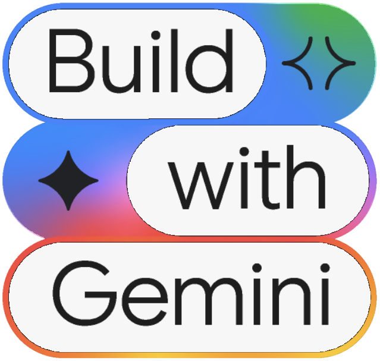

Google Developer GroupBangkok · DevFest 2026
Google Developer GroupBangkok · DevFest 2026
Agenda
- 01The prototype gapWhy "it worked in my prompt" is not enough
- 02Meet Agents CLICommand line + Agent Skills · two ways to use it
- 03Build & evaluateScaffold, ADK, the quality flywheel · let AI build it
- 04Deploy, publish & observeAgent Runtime, Gemini Enterprise, traces
The prototype
gap
"It worked in my prompt"
is not a release plan
A demo agent is easy. A production agent is not.
Most of the work happens after the first prompt works
- Works for the prompts you tried
- Runs on your laptop
- No idea if a change made it worse
- No logs when something goes wrong
- Evals that catch regressions
- Infra & CI/CD to ship safely
- Sessions & memory that persist
- Tracing & logging in production
Meet
Agents CLI
One toolkit from scaffold
to production
Agents CLI = Command Line + Agent Skills
"CLI and skills for building agents on Google Cloud"
Command line
Commands for the whole agent lifecycle: scaffold, run, eval, deploy, publishAgent Skills
Teach your AI coding agent (Antigravity, Claude Code, Cursor, Codex…) how to build agents the right wayADK under the hood
Agents are built with the Agent Development Kit, A2A built inTwo ways to use it
Full control of every step from your terminal
- Install the Agent Skills into Claude Code, Antigravity, Cursor or Codex
- Describe the agent in plain language
- The AI picks the right skill and command for each step
7 skills your coding agent gets
Each skill is named google-agents-cli-<name> · check them in Claude Code with /skills
From prompt to production in 8 steps
Understand
Agree the spec firstSamples
Study a matching sampleScaffold
scaffold createBuild
run · playgroundEvaluate
eval runDeploy
deployPublish
publish gemini-enterpriseObserve
Traces · logs · analyticsEvaluate is the most important step: expect 5–10+ iterations before a case passes
Commands at a glance
setup · update
Scaffoldscaffold create <name> · scaffold enhance . · scaffold upgrade
Developrun "prompt" · playground · lint · install
Evaluateeval run · eval generate · eval grade · eval compare · eval analyze · eval optimize
Deploydeploy · infra cicd · infra single-project
Publishpublish gemini-enterprise
Infoinfo · login --status
Every command: agents-cli <command> --help for the current flags
Your first agent in five commands
# 1 · install the CLI and skills
uvx google-agents-cli setup
# 2 · sign in and pick a Google Cloud project
gcloud auth login
gcloud config set project PROJECT_ID
agents-cli login -i
# 3 · create a project ready for Agent Runtime
agents-cli create my-first-agent -y --deployment-target agent_runtime
# 4 · install dependencies and chat with it in the web playground
cd my-first-agent && agents-cli install && agents-cli playground
Build &
evaluate
Scaffold, code with ADK,
then prove it works
Start with a scaffold, prototype first
Later, when the agent works, add deployment:
You get
- ADK agent code (A2A built in)
tests/eval/dataset + config- Terraform & CI/CD when you add a target
- A guidance file for your coding agent
Why scaffold? Setting up by hand misses the eval boilerplate, CI/CD config and project conventions.
An agent is instructions + tools
from google.adk.agents import Agent
def get_weather(city: str) -> dict:
"""Get current weather for a city."""
return {"city": city, "temp": "22°C", "condition": "sunny"}
root_agent = Agent(
name="weather_agent",
model=MODEL, # the scaffold sets a current Gemini model
instruction="You help travellers plan around the weather.",
tools=[get_weather],
)
run: one-shot smoke test (-vshows JSON events)playground: web UI to chat with your agent- The docstring tells the model when to use the tool
Three ways to test, three different jobs
agents-cli run
Quick smoke test while you code. One prompt, one answer.uv run pytest
Tests code correctness: imports, types, API contracts.agents-cli eval
Tests agent behaviour: answer quality, tool use, safety.Don't write pytest that checks what the LLM says. Outputs are non-deterministic: use eval with an LLM judge instead.
The quality flywheel
eval dataset synthesizeeval generateeval gradeeval analyzeeval optimizeeval run = generate + grade · eval compare checks a fix didn't break other metrics · loop until it passes
Pick metrics by what you want to know
multi_turn_task_success
Was the path logical and efficient?multi_turn_trajectory_quality
Were the tools used well?multi_turn_tool_use_quality
Is the final answer good?final_response_quality
Any made-up claims?hallucination
Safe?safety
Something only you can checkcustom LLMMetric (judge) or CodeExecutionMetric (Python)
agents-cli eval metric list shows all built-ins
When a score fails, fix the agent
Fix orchestration, missing or wrong tool calls
Fix tool descriptions and parameter docstrings
Keep answers grounded in tool output
Add guardrails to the instructions
Never lower the threshold to make it pass, and don't delete a flaky case: it's telling you something.
Let AI build
your AI agent
Claude Code or Antigravity
+ Agents CLI skills, from one prompt
Give Antigravity the Agents CLI skills
Install
Detects Antigravity and installs the 7 skills globally
Check
You should see the google-agents-cli-* folders. Then restart Antigravity.
Ask
Open the Agent panel and confirm it lists them
Skills are stored in ~/.agents/skills and linked into ~/.gemini/config/skills (IDE) and ~/.gemini/antigravity-cli/skills (CLI)
Project only: agents-cli setup --workspace · Update: uv tool upgrade google-agents-cli, then run setup again
Describe the agent, not the commands
Open Claude Code, check the Agents CLI skills are installed, then send the prompt
Create a weight loss assistant using Agents CLI
The agent should:
- Collect the user's profile and weight-loss goals.
- Estimate daily calorie needs.
- Recommend healthy meals with calorie estimates.
- Support Thai and English.
- Generate evaluation datasets and tests.
- Follow Google Agents CLI and ADK best practices.
- Prepare the project for local testing and deployment to Google Cloud.
From prompt to a deployed agent
Create → Evaluate → Deploy almost entirely through the coding agent, without touching code or the command line. It doesn't replace agent design: you still own the business logic.
Deploy, publish
& observe
Ship it to Google Cloud
and watch it run
Choose a deployment target
Agent Runtime
agent_runtime- Managed, built for agents
- Sessions handled for you
- Lowest ops, not billed when idle
Cloud Run
cloud_run- Full networking control
- Pub/Sub & Eventarc triggers
- Cloud SQL or managed sessions
GKE
gke- Full Kubernetes control
- Autopilot cluster
- Needs Kubernetes skills
"Agent Engine" is now Agent Runtime · agents that need OAuth user consent → Agent Runtime with Gemini Enterprise
Deploy when the evals pass
agents-cli deployinfra cicd
Pipeline on GitHub Actions (default) or Cloud Builddeploy --status
Agent Runtime deploys take 5–10 min and keep running if your terminal times outPut it in front of users, then watch it
Publish (optional)
Register the agent in Gemini Enterprise so people in your company can use it. Every scaffolded agent speaks A2A.
Always on · latency & errors per step
On when deployed · audit & compliance
Opt-in · LLM calls, tool use, outcomes
AgentOps, Phoenix, MLflow…
From prompt to production
uvx google-agents-cli setup # install CLI + skills
agents-cli scaffold create my-agent --agent adk --prototype
agents-cli run "Weather in Bangkok?" # smoke test
agents-cli eval run # evaluate, fix, repeat
agents-cli scaffold enhance . --deployment-target agent_runtime
agents-cli deploy # after human approval
agents-cli publish gemini-enterprise # optional
Scaffold first · evaluate always · deploy with approval
Get started today
Quickstart
google.github.io/agents-cliAnnouncement
developers.googleblog.com · Agents CLICoding with AI (ADK)
adk.dev/tutorials/coding-with-aiStep by step (Thai)
Medium · ใช้ AI ช่วยสร้าง AI Agent ด้วย Agents CLIThank you
Q & A
Punsiri Boonyakiat
Google Developer Expert in Cloud AI